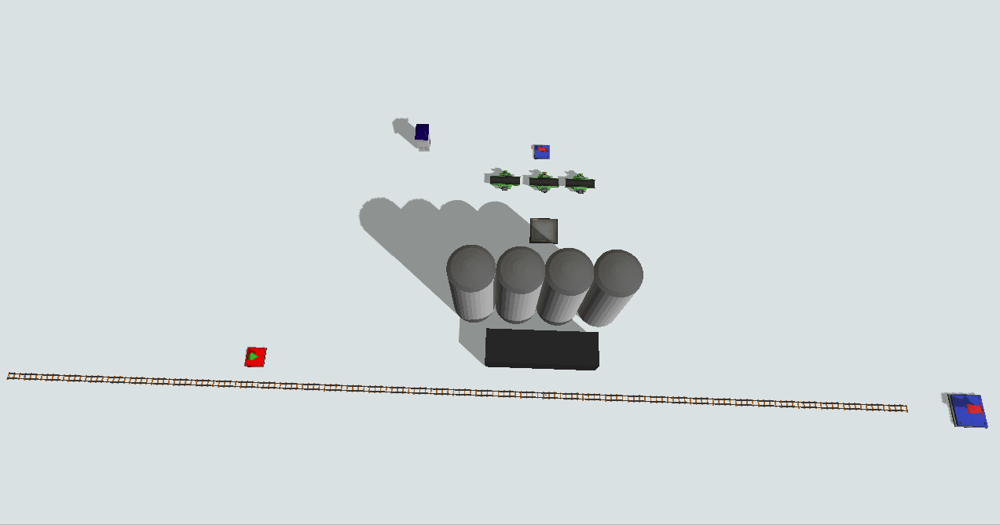
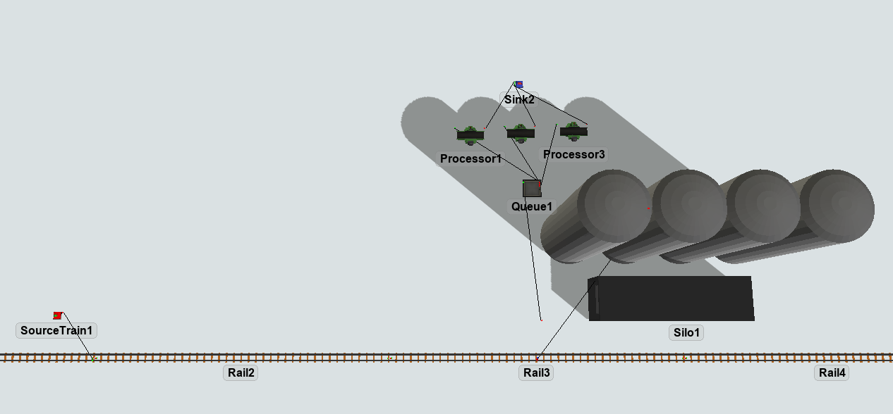
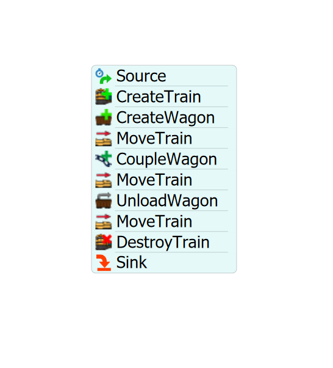

Exercise Information
A station receives locomotives at intervals of 30 seconds to
unload cylinders, these cylinders are put on a queue to be later
processed by 3 Processors (processing time of 10 seconds), those
cylinders are then discarded. Each cylinder weighs 50 kilograms
and the locomotive transports 10 cylinders on each trip.
Step 1 Creating objects
In order to achieve the solution for the problem, you should
create the following objects:
- Create one SourceTrain.
- Create four Rails.
-
Connect SourceTrain to the Rail2 (using the
A key) and then connect Rail1 to Rail2, Rail2
to Rail3 and Rail3 to Rail4 via proximity.
-
Create one RailControlPoint and put one on Rail1 and Rail3.
The RailControlPoint should change color if it is connected
correctly to the Rail. We recommend the creation of the
RailControlPoint in a empty space and, after that, you can
place it on the Rail.
-
Create one Station, then connect its center port (using the
S key) to the RailControlPoint.
-
On the Station, set "Max Weight" to 5000, "Units Per FlowItem"
to 50 and "FlowItem Class" to Cylinder.
-
Create one Queue and connects the Station to it (using the
A key).
-
Create three Processors and connect the queue to them (using
the A key).
-
Create a Sink and connect the three Processors to it (using
the A key).
-
Create a Sink and put it next to Rail3, no need to connect
it.

Your model should be looking like this.

Step 2 Processflow Configuration
In order to achieve the solution for the problem, you should
create the following processflow tasks:
- Create a Inter-Arrival Source.
- Create a "CreateTrain" activity.
- Create a "CreateWagon" activity.
- Create a "MoveTrain" activity.
- Create a "CoupleWagon" activity.
- Create a "MoveTrain" activity.
- Create a "UnloadWagon" activity.
- Create a "MoveTrain" activity.
- Create a "DestroyTrain" activity.
- Create a Sink.
Your processflow should be looking like this.

To configure your processflow tasks follow the steps:
- On the Source, set the "Inter-Arrivaltime" to 30.
-
On "CreateTrain" activity, point the "Source Train" reference to your
SourceTrain and set the "Locomotive Speed Coupled Loaded" to the value 2. Set
"Max Weight" and "Current Weight" to 500.
- On "CreateWagon" activity, point the "Control Point" reference to the
RailControlPoint on Rail1, set wagons quantity to 1 and check "Reverse Create".
-
On "MoveTrain" activity, set train reference to "token.train" and destiny
to the label "token.wagon".
-
On "CoupleWagon" activity, set train reference to "token.train" and wagon
reference to "token.wagon".
-
On the second "MoveTrain" activity, set train reference to "token.train" and destiny
to RailControlPoint2.
-
On "UnloadWagon" activity, set train reference to "token.train" and
"ControlPoint" reference to RailControlPoint1.
-
On the third "MoveTrain" activity, set train reference to "token.train" and
destiny to Rail4.
-
On "DestroyTrain" activity, set train reference to "token.train" and Sink
reference to the Sink next to Rail4.
With this configuration your model is ready.